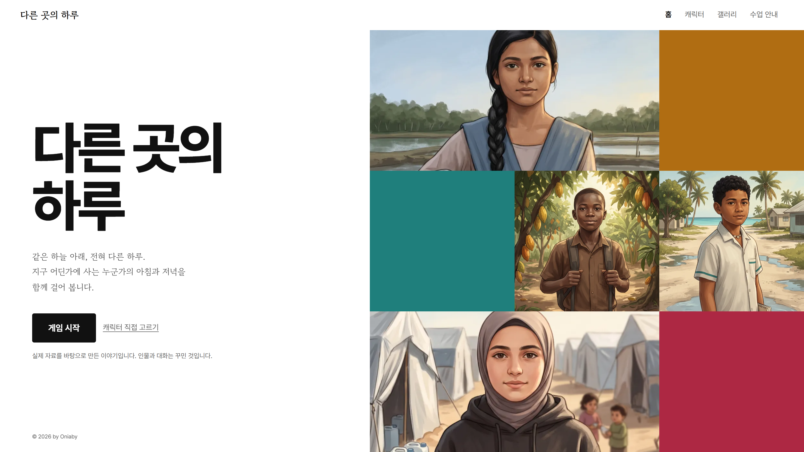
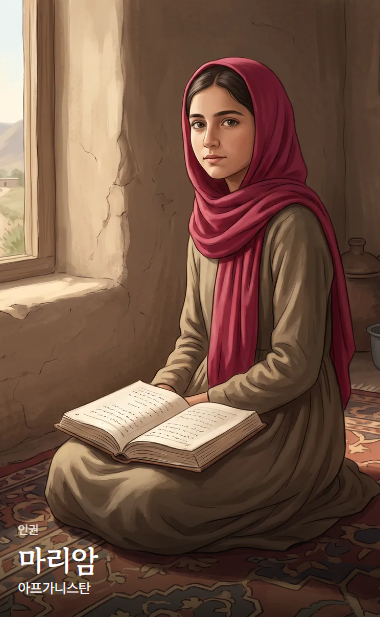
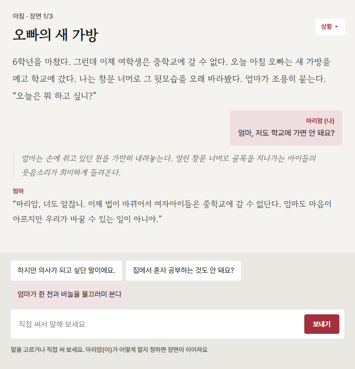
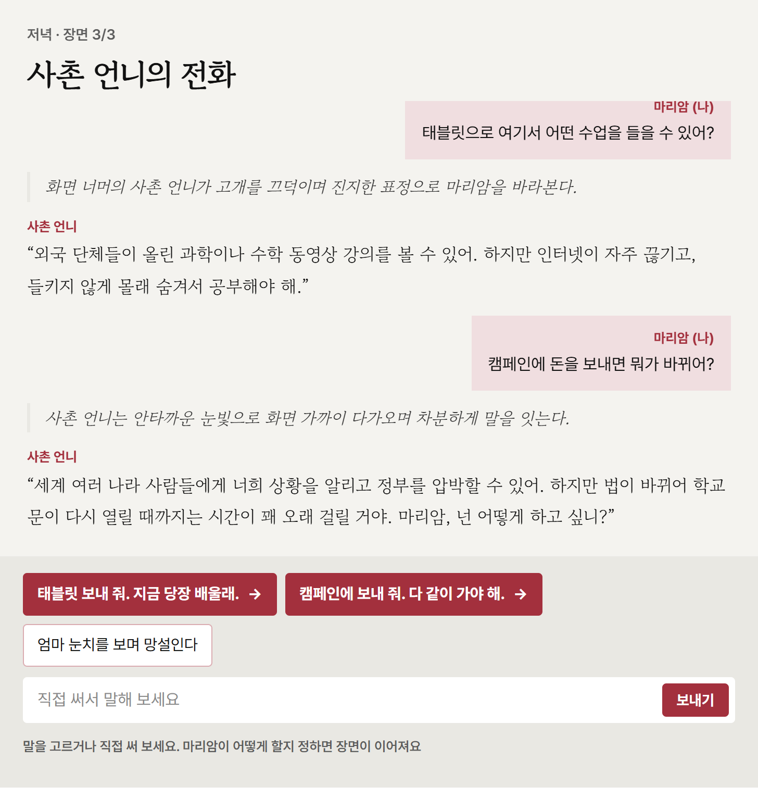

생성형 AI와 함께 지구촌 문제 해결하기
2026336014양성룡
새 학년이 시작됐는데
학교에 가지 않는
학생이 있습니다.
왜 그럴까요?
이 학생에게
무엇을 물어봐야 할까요?
“왜 안 갔니?”
“왜 못 갔니?”
이러한 상황을
도덕 수업에
어떻게 적용할까요?
도덕 수업의 4단계
01
인식
이 상황에서 뭐가 문제지?
상황 속 도덕적 문제를 알아차린다
02
공감
이 사람들이 겪는 어려움이 뭘까?
당사자의 어려움과 바람을 살핀다
03
선택
그럼 나는 어떻게 할까?
충돌하는 가치 사이에서 중요한 것을 고른다
04
제안
문제를 해결하려면 어떻게 할 수 있을까?
누가 무엇을 할 수 있는지 제안한다
기존의 도덕 수업은
어떻게 했을까요?
01
문제 제기
교과서나 시사 자료로 문제 상황 제시
02
사례 조사
관련 실태와 통계 자료 탐색
03
토의·토론
가치 갈등 분석과 입장 나누기
04
글쓰기·피드백
자신의 생각 정리와 상호 피드백
오늘의 수업 주제
인류의 고통에 공감하며 지구적 차원의 다양한 도덕 문제들을 탐구하고, 해결 방안을 모색하여 실천하는 자세를 갖는다.
성취기준 핵심요소
01
공감적 태도
타인의 입장에서 어려움을 살핀다
02
탐구와 분석
원인과 실태를 조사,분석하여 권리와 책임을 묻는다
03
실천적 의지
내가 할 일과 제도가 할 일을 찾는다
기존 도덕수업이라면?
활동 A
내가 소중히 여기는 가치
문제 해결에 어떤 가치가 중요한가
활동 B
지구촌 문제 해결하기
문제와 원인, 해결책은 무엇인가
활동 A · 내가 소중히 여기는 가치
01
사례를 접한다
교사가 제시하거나 학생이 찾는다
02
내가 생각한 가치를 고른다
03
이유를 말한다
왜 이 가치가 중요할까요?
지구촌 문제 해결에 있어서,
내가 생각한 중요한 가치는?
활동 B · 지구촌 문제 해결하기
AI를 이 수업에서
어떻게 활용할 수 있을까요?
기존 도덕 수업에 AI를 도입한다면?
기존 도덕 수업
AI와 함께하는 도덕 수업
AI를 어떻게 활용하는게 좋을까요?
빈곤·불평등, 기후변화, 질병, 갈등, 디지털 격차 같은 복합적인 위기는 한 나라나 기술 하나만으로 풀 수 없습니다. 네 가지 층위가 맞물려 작동해야 합니다.
이 답을 옮겨 적는 걸로
활동이 끝날까요?
이 판단과 생각은
누가 했다고 볼 수 있을까요?
그럼 학생의 판단과 생각에 AI는 어떻게 도와줘야 할까요?
학생
AI
문제를 정한다
문제를 찾고 알려준다
근거를 확인한다
그게 맞는지 되묻는다
이유를 설명한다
다른 관점들을 제시한다
AI가 학생의 생각에 의견을 보태준다면?
AI가 맡을 수 있는 세 역할
역할 1
대화 상대
상황 속 인물이 되어 학생과 대화한다
역할 2
조력자
학생의 질문을 구체화하고 근거를 찾게 돕는다
역할 3
피드백
학생의 글에 질문과 수정 방향을 준다
즉, AI와 함께하는 도덕수업은?
나의 생각을,
대화를 통해 정리하여
판단할 수 있게 한다.
다시 묻습니다.
새 학년이 시작됐는데
학교에 가지 않는
학생이 있습니다.
왜 그럴까요?
첫 번째 역할: 인물의 입장을 대신 체험해보기

“왜 안 갔지?”
“왜 못 갔지?”
왜 마리암은
중학교에 갈 권리가 허용되지 않는가?


학교를 가고 싶은 마리암
마리암 (나)
“엄마, 저도 학교에 가면 안 돼요?”
마리암이 할 수 있는 선택은?
마리암이 처한 상황을.
대신 체험, 공감해보기.

돈이 있다면 무엇을 할까?
작은 화면으로 넓어진 세상
온라인 영어 수업을 듣고 외국 친구도 사귄다. 하지만 인터넷 요금이 비싸고, 졸업장을 받을 수 있을지는 알 수 없다.
모두의 권리를 향한 외침
교육권을 요구하는 팻말 사진에 가슴이 벅차다. 하지만 다음 날 아침에도 마리암은 학교에 가지 못한다.
두 번째 역할: 조력자
“왜 학교에 못 갈까?”
→ 여학생 교육을 막는 정책은?
→ 몰래 하는 공부의 위험은?
나온 대답을 검토한다.
역할 3 · 학생의 생각을 검토하고 피드백하기
핵심 요약
마리암 같은 여학생은 정책 때문에 중학교에 갈 수 없다.
교육 지원 기관에서 학습 기기를 보내 온라인 수업을 들을 수 있게 해 주세요.
기기 값이 든다. 현지 학생들에게 어떤 수업이 필요한지 물어봐야 한다.
UNESCO의 2025년 자료는 탈레반의 정책으로 여학생과 여성의 중등·고등교육 접근이 차단되었다고 설명한다.
마리암
제안서를 읽어 줘서 고마워. 집에서 기기로 수업을 들을 수 있다면 정말 기쁠 것 같지만, 우리 집에는 인터넷이나 전기가 잘 안 들어올 때가 많고 기기를 가지고 있는 것 자체가 들키면 위험할까 봐 조금 무섭기도 해.
선생님
문제의 원인을 짚고 구체적인 대안을 제시하려는 시도가 아주 훌륭해요. 다만 조사 내용에서 다룬 '대체 학습의 위험과 졸업장 미인정 한계'를 고려해, 기기 지원 외에 안전을 지키고 학력을 인정받을 방법도 '예상되는 어려움과 보완'에 더 담아보면 어떨까요?
QR 코드를 찍어 바로 체험하기
onischool.net/anotherday